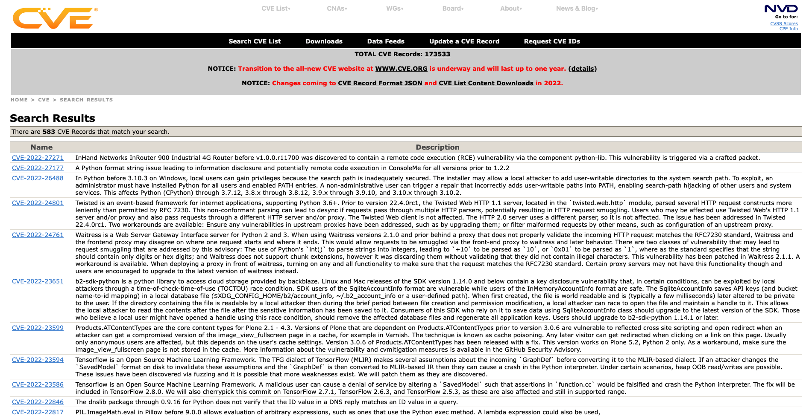

What is a Secure Programming Language?
According to Cifuentes & Bierman, 2019 three of the top vulnerabilities found in main programming languages are:
- Buffer errors. Buffer overflow errors occur when a predefined memory allocated space or data type allocated space (such as integer and long integer) is overloaded. It can cause overwriting of data and potential corruption of memory beyond the defined buffer boundaries.
- Information leak errors. These errors can be defined as the intentional or unintentional release of information to an untrusted environment. The most common form of information leak error is by disclosing important system information in a way of log files or error messages.
- Injection errors. This type of errors is performed when an attacker tricks a program into accept malicious input, such as data code or system commands and the program does not implement mechanisms to validate inputs. Usually, malicious inputs are in the form of strings that are entered by the user. Subcategories of injection errors are:
- Cross-site scripting (XSS). This is a vulnerability that allows attackers to inject malicious code into a website. Three main types of VSS are considered by CWE-79: reflected XSS, stored XSS and DOM-based XSS.
- SQL injection. This type of injection allows attackers to execute SQL commands on the database which communicates with the application, usually with the intention of disclosing data and tampering/deleting valuable information.
In Pillai, 2017 some other vulnerabilities included to this list are:
- Improper access control. Applications should consider giving correct access permissions to the users to avoid exposing information or elevation of privileges.
- Cryptography issues. Level and strength of security should be verified and ascertained via secure protocols or secure mechanisms.
- Race conditions. This error vulnerability can be produced when two processes or actors attempt to reach a particular resource at the same time and the output depends on the correct order of access.
Causes of Common Vulnerabilities.
According to Cifuentes & Bierman, 2019 unsecure and incorrect code is not written intentionally. Vulnerable code is written because developers are not provided with adequate mechanisms to support them writing vulnerable-prone code.
- Buffer errors are caused because of manual management of pointers.
- Injection errors are introduced due to interpretation of programming languages of code as input strings.
- Information leak errors occur due to manual tracking of sensitive data.
Abstractions Mechanisms.
Abstractions in programming languages can help developers to avoid performing these errors at the possible cost of a time-consuming learning curve and performance overhead in applications. Success of abstraction mechanisms may depend on the easiness of how they can be used.
Next abstractions mechanisms are discussed by Cifuentes & Bierman, 2019:
- Managed memory. This mechanism is introduced using the concept of garbage collection during runtime of the program. Garbage collection frees the developers of the need to allocate or deallocate memory space manually. Managed memory in some programming domains such as embedded systems is not feasible due to performance overhead.
- Ownership and borrowing. Ownership is a programming pattern employed in C++ where a resource is only assigned one owner. When a resource is transferred via assignment or passing by value the previous owner of the resource cannot access it. Borrowing allows to reference an available resource in a secure manner.
- Language INtegrated Query (LINQ) to SQL. Instead of using string commands to execute SQL operations in a database, frameworks such as LINQ which is implemented in .NET allow to use language implemented functions to perform SQL operations. The disadvantage is that complex SQL operations may not be available.
- Taint tracking. Programming languages such as Ruby implement a taint mode to track external input values and perform taint checks to prevent direct or indirect use of tainted values. Tainted values can include command-line arguments, environment variables, locale information, results of some system class, etc.
- Faceted values. These types of values may help avoiding leak information errors by allowing developers specifying and enforcing policies of the information that is presented to the final viewer.
Team Discussion.
- What factors determine whether a programming language is secure or not?
- Could Python be classed as a secure language? Justify your answer.
- Integer overflow error caused by returning len() values bigger than the space that can be fit into an integer.
- Core dumped error caused by invoking malicious implementation using the eval() function.
- Use of unsecure serializing libraries such as pickle which may expose a vulnerability that displays content of root directory where project is stored.
- Python would be a better language to create operating systems than C. Discuss.
Whether a programming a language is secure or not may be determined depending on how capable it is of implement mechanisms against known vulnerabilities.
According to Cifuentes & Bierman, 2019, no language can be considered secure because they are susceptible to most common vulnerabilities: buffer errors, injection errors and data leak errors.
Pillai, 2017 reviews some of the vulnerabilities resolved with the release of Python3 but demonstrates how some of them can be still exploited. Some of these are:
To conclude why Python may not be a secure programming language, next image shows 583 vulnerability records of a search performed in February 2022 at Common Vulnerabilities and Exposures (CVEs) directory (http://cve.mitre.org).
No, because performance is a key aspect on operating systems. Memory needs to be managed manually which can be done with programming languages such as C and C++.
References:
Pillai, A.B. (2017) Software Architecture with Python. Birmingham, UK. Packt Publishing Ltd.
Cifuentes, C. & Bierman, G. (2019) What is a Secure Programming Language? 3rd Summit on Advances in Programming Languages (SNAPL).136(3): 1 - 15.
CVE. (2022) search Results of Python vulnerabilities. Available: http://cve.mitre.org/cgi-bin/cvekey.cgi?keyword=python [Accessed 27 February 2022].